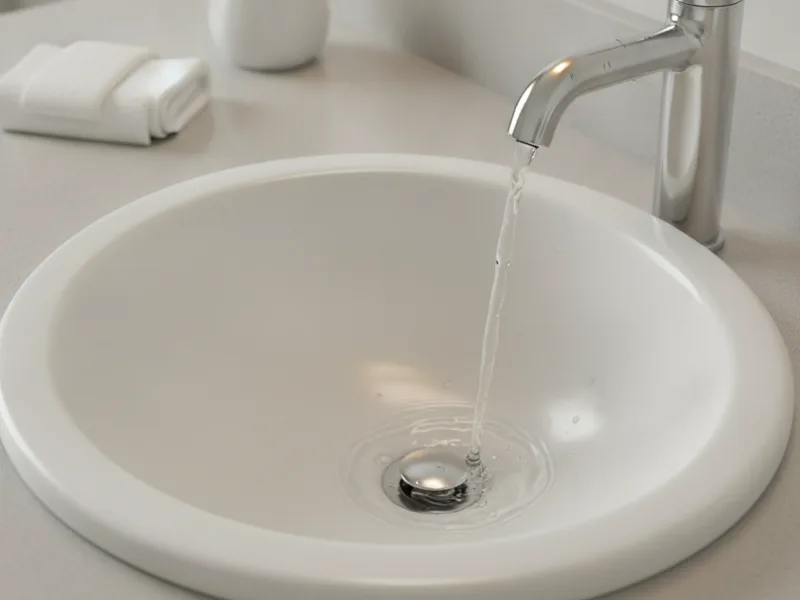
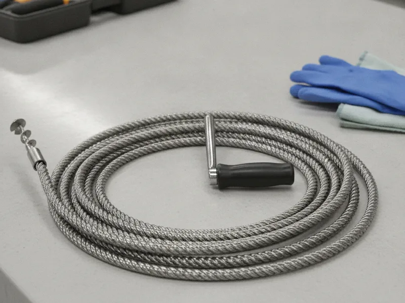

Drainage Service in Armonk, NY
From a slow kitchen sink to a backed-up sewer line, we handle every part of your home's drainage system — with upfront pricing and same-day appointments across Armonk and Westchester County.
- Licensed & Insured
- Same-Day Service Available
- Upfront Pricing
- 15+ Years of Experience

The range of drain and sewer problems we handle
Westchester County has one of the most varied mixes of housing stock in the region. Armonk and its neighboring towns include homes built decades ago with original cast-iron and clay drain lines, alongside newer construction with modern PVC piping. Each type of home tends to run into different drainage problems, and we've spent years working on both.
Older homes often develop buildup and corrosion inside aging pipe, while newer homes are more likely to see a fixture-level clog or a one-time blockage from something that shouldn't have gone down the drain. Either way, our job is to figure out what's actually happening in your specific pipes before we recommend a fix. Drain and sewer work also has to follow the same plumbing codes utilities and inspectors use. If you want to see the standards behind proper drainage design, the Uniform Plumbing Code maintained by IAPMO is a good place to look.
Below is an overview of the drainage services we offer. Each one links to a full page with more detail on signs, causes, and what to expect.

Everyday drain clearing
Most drain problems start small: water draining slower than usual, a gurgling sound, or a smell that won't go away. Our first step is usually clearing a slow or clogged drain using the right tool for the job, without reaching for harsh chemicals that can damage older pipe.
If the same drain keeps backing up every few months no matter how often it's cleared, that's a different problem. We specialize in fixing a recurring clogged drain by tracking down the actual cause instead of just clearing it again and sending you on your way.
For blockages that a standard cleaning can't move — often from grease, scale, or something lodged deep in the line — we turn to drain snaking for stubborn blockages, which reaches further into the pipe than most homeowner tools can. If a clog keeps returning even after snaking, we'll often follow up with a quick camera look to see whether the real problem is farther down the line.

Tougher blockages and deeper cleaning
Some pipes need more than a cable to get truly clean. That's where high-pressure hydro jetting comes in — it scours the inside of the pipe with high-pressure water, breaking up years of grease and buildup that snaking alone tends to leave behind.
Jetting is also a useful step after a sewer line repair, since it flushes out loosened debris and construction residue that could otherwise cause another clog within a few weeks. If your technician recommends clearing out residual debris after a repair, this is usually why.
Sewer line diagnosis and repair
When a problem shows up in more than one drain at once — multiple slow fixtures, gurgling toilets, or sewage odor in the yard — the issue is often in the main sewer line rather than a single branch pipe. We start by camera inspection of your sewer line so we can see the actual condition of the pipe instead of guessing.
If the footage shows a crack, a collapsed section, or root intrusion, we move on to repairing a damaged sewer line. We'll walk you through exactly what the camera found and what your repair options are before any work begins.
Commercial drain care
We also support small commercial properties, including restaurants and delis, with grease trap cleaning for commercial kitchens. A neglected grease trap is one of the most common causes of slow or backed-up drains in a commercial kitchen, and regular service keeps the rest of the plumbing system running the way it should.
Whatever the issue, our goal is the same: diagnose the real problem, explain your options in plain language, and give you upfront pricing before we start any work.
Frequently asked questions
How do I know if I need drain cleaning or a bigger repair?
A single slow drain usually just needs cleaning. If the same drain clogs repeatedly, multiple drains are affected at once, or you notice sewage smells in the yard, it's worth having us take a closer look before the problem gets bigger.
Do older homes in Armonk have different drain problems than newer homes?
Often, yes. Homes with original cast-iron or clay pipe tend to develop internal buildup and corrosion over time, while newer homes with PVC piping more often deal with one-time clogs. We adjust our approach based on what's actually in your walls and yard.
Can you clear a drain without damaging older pipe?
Yes. We choose the method — cleaning, snaking, or jetting — based on the age and condition of your pipe, so we're not putting more stress on fragile older plumbing than it can handle.
Do you offer same-day drainage service?
We offer same-day appointments whenever possible, especially for backups and other issues that affect your ability to use your plumbing normally.
Do you work on commercial drains and grease traps?
Yes. In addition to residential drainage work, we service small commercial kitchens in the area, including regular grease trap cleaning.
Will you tell me what's actually wrong before doing the work?
Always. We explain what we find, what's causing it, and what your options are, with clear pricing before we start.